Lineage tracing with mtDNA heteroplasmy in single cell RNA seq human data
Source:vignettes/Ludwig_et_al_example_notebook.Rmd
Ludwig_et_al_example_notebook.Rmd
library(MitoHEAR)Dataset GSE115210
In the first part of the vignette it is shown the analysis performed on the dataset with GEO accession number GSE115210 from Ludwig et al, 2019 used in fig. 2/S2. Individually sorted cells from clonally derived TF1 clones (C9, D6, and G10) were processed with single cell RNA-seq (Smart-seq2)
Get counts for the four alleles in each base-cell pair
load(system.file("extdata", "name_cells_fig_2.Rda", package = "MitoHEAR"))
load(system.file("extdata", "name_cells_fig_2_analysis.Rda", package = "MitoHEAR"))We don’t execute the function get_raw_counts_allele here and we directly load his output. A command line implementation of the function get_raw_counts_allele is also available (see github README file for info).
load(system.file("extdata", "output_SNP_mt_fig_2_new.Rda", package = "MitoHEAR"))
output_SNP_mt_fig_2 <- result
matrix_allele_counts <- output_SNP_mt_fig_2[[1]]
name_position_allele <- output_SNP_mt_fig_2[[2]]
name_position <- output_SNP_mt_fig_2[[3]]
my.clusters <- rep(0, length(name_cells_fig_2))
my.clusters[grep("_G10_", name_cells_fig_2)] <- "G10"
my.clusters[grep("_D6_", name_cells_fig_2)] <- "D6"
my.clusters[grep("_C9_", name_cells_fig_2)] <- "C9"
tfi_fig_2 <- get_heteroplasmy(matrix_allele_counts, name_position_allele, name_position, number_reads = 50, number_positions = 2000, filtering = 1, my.clusters)
sum_matrix <- tfi_fig_2[[1]]
sum_matrix_qc <- tfi_fig_2[[2]]
heteroplasmy_matrix_ci <- tfi_fig_2[[3]]
allele_matrix_ci<- tfi_fig_2[[4]]
cluster_ci <- my.clusters[row.names(sum_matrix)%in%row.names(sum_matrix_qc)]
index_ci <- tfi_fig_2[[5]]
name_position_allele_qc <- name_position_allele[name_position%in%colnames(sum_matrix_qc)]
name_position_qc <- name_position[name_position%in%colnames(sum_matrix_qc)]
relevant_bases <- filter_bases(heteroplasmy_matrix_ci, min_heteroplasmy = 0.01, min_cells = 10, index_ci)Identification of most different bases according to heteroplasmy between clones
p_value_wilcox_test_1 <- get_wilcox_test(heteroplasmy_matrix_ci[, relevant_bases], cluster_ci, "C9", "D6" , index_ci)
p_value_wilcox_test_2 <- get_wilcox_test(heteroplasmy_matrix_ci[, relevant_bases], cluster_ci, "C9", "G10" , index_ci)
p_value_wilcox_test_3 <- get_wilcox_test(heteroplasmy_matrix_ci[, relevant_bases], cluster_ci, "D6", "G10" , index_ci)
p_value_wilcox_test_sort_1 <- sort(p_value_wilcox_test_1, decreasing = F)
p_value_wilcox_test_sort_2 <- sort(p_value_wilcox_test_2, decreasing = F)
p_value_wilcox_test_sort_3 <- sort(p_value_wilcox_test_3, decreasing = F)
p_value_wilcox_test_sort_small_1 <- p_value_wilcox_test_sort_1[p_value_wilcox_test_sort_1<0.05]
p_value_wilcox_test_sort_small_2 <- p_value_wilcox_test_sort_2[p_value_wilcox_test_sort_2<0.05]
p_value_wilcox_test_sort_small_3 <- p_value_wilcox_test_sort_3[p_value_wilcox_test_sort_3<0.05]
q <- list()
for ( i in 1:length(p_value_wilcox_test_sort_small_3[1:2])){
p <- plot_heteroplasmy(names(p_value_wilcox_test_sort_small_3)[i], heteroplasmy_matrix_ci, cluster_ci, index_ci)+ggplot2::ggtitle(paste(names(p_value_wilcox_test_sort_small_3)[i], round(p_value_wilcox_test_sort_small_3[i], 4), sep = "-"))
q <- list(q, p)
}
q
#> [[1]]
#> [[1]][[1]]
#> list()
#>
#> [[1]][[2]]#>
#>
#> [[2]]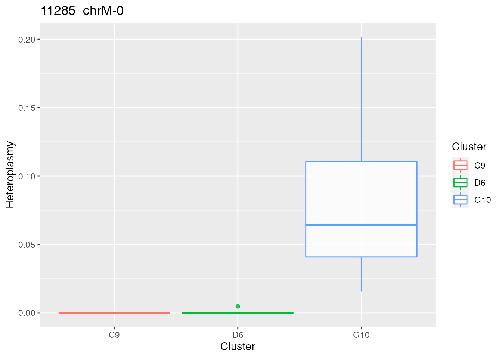
q <- list()
for ( i in names(p_value_wilcox_test_sort_small_3[1:2])){
p <- plot_allele_frequency(i, heteroplasmy_matrix_ci, allele_matrix_ci, cluster_ci, name_position_qc, name_position_allele_qc, 5, index_ci)
q <- list(q, p)
}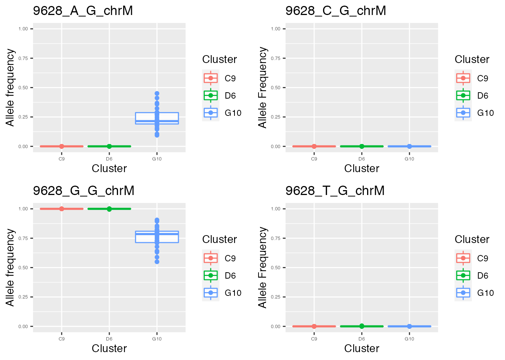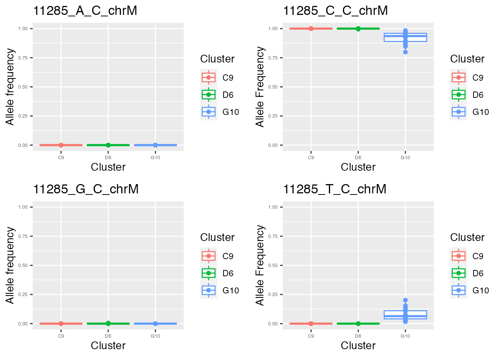
q
#> [[1]]
#> [[1]][[1]]
#> list()
#>
#> [[1]][[2]]
#> TableGrob (2 x 2) "arrange": 4 grobs
#> z cells name grob
#> 1 1 (1-1,1-1) arrange gtable[layout]
#> 2 2 (1-1,2-2) arrange gtable[layout]
#> 3 3 (2-2,1-1) arrange gtable[layout]
#> 4 4 (2-2,2-2) arrange gtable[layout]
#>
#>
#> [[2]]
#> TableGrob (2 x 2) "arrange": 4 grobs
#> z cells name grob
#> 1 1 (1-1,1-1) arrange gtable[layout]
#> 2 2 (1-1,2-2) arrange gtable[layout]
#> 3 3 (2-2,1-1) arrange gtable[layout]
#> 4 4 (2-2,2-2) arrange gtable[layout]Supervised cluster analysis among cells based on allele frequency values
features_cluster <- c(names(p_value_wilcox_test_sort_small_1), names(p_value_wilcox_test_sort_small_2), names(p_value_wilcox_test_sort_small_3))
features_cluster <- unique(features_cluster)
result_clustering_sc <- clustering_angular_distance(heteroplasmy_matrix_ci, allele_matrix_ci, cluster_ci, length(colnames(heteroplasmy_matrix_ci)), deepSplit_param = 1, minClusterSize_param = 15, 0.2, min_value = 0.001, index = index_ci, relevant_bases = features_cluster)
#> ..cutHeight not given, setting it to 1.66 ===> 99% of the (truncated) height range in dendro.
#> ..done.
old_new_classification <-result_clustering_sc[[1]]
dist_matrix_sc <- result_clustering_sc[[2]]
top_dist <- result_clustering_sc[[3]]
common_idx <- result_clustering_sc[[4]]
old_classification <- as.vector(old_new_classification[, 1])
new_classification <- as.vector(old_new_classification[, 2])Comparison between the ground truth and the new partition obtained with supervised cluster analysis
plot_heatmap( new_classification, old_classification, (dist_matrix_sc), cluster_columns = F, cluster_rows = F, "Euclidean distance")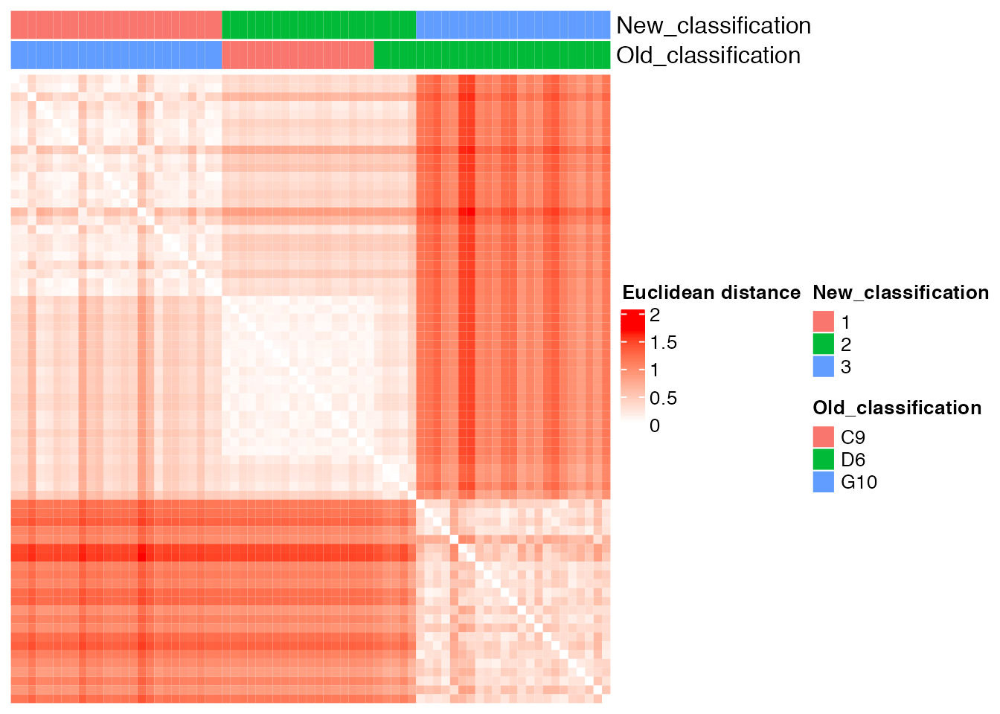
Unsupervised cluster analysis among cells based on allele frequency values
result_clustering_sc <- clustering_angular_distance(heteroplasmy_matrix_ci, allele_matrix_ci, cluster_ci, length(colnames(heteroplasmy_matrix_ci)), deepSplit_param = 1, minClusterSize_param = 15, 0.2, min_value = 0.001, index = index_ci, relevant_bases = NULL)
#> Warning in clustering_angular_distance(heteroplasmy_matrix_ci,
#> allele_matrix_ci, : Less than 10525 bases present. All the bases will be
#> consider for downstream analysis.
#> ..cutHeight not given, setting it to 1.65 ===> 99% of the (truncated) height range in dendro.
#> ..done.
old_new_classification <- result_clustering_sc[[1]]
dist_matrix_sc <- result_clustering_sc[[2]]
top_dist <- result_clustering_sc[[3]]
common_idx <- result_clustering_sc[[4]]
old_classification <- as.vector(old_new_classification[, 1])
new_classification <- as.vector(old_new_classification[, 2])Comparison between the ground truth and the new partition obtained with unsupervised cluster analysis
plot_heatmap(new_classification, old_classification, (dist_matrix_sc), cluster_columns = F, cluster_rows = F, "Euclidean distance")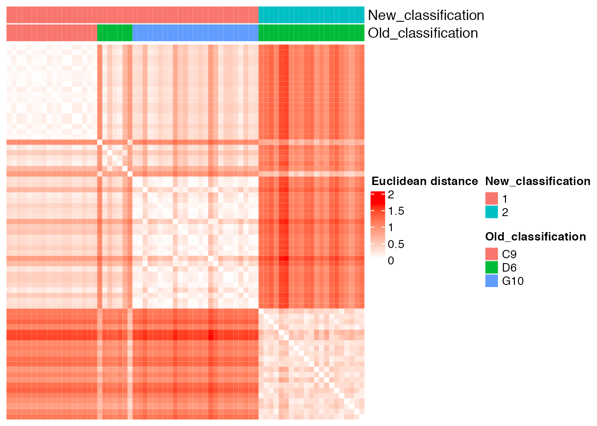
Below the bases selected for the unsupervised cluster analysis
q <- list()
for ( i in 1:length(top_dist)){
p <- plot_heteroplasmy(top_dist[i], heteroplasmy_matrix_ci, cluster_ci, index_ci)
q <- list(q, p)
}
q
#> [[1]]
#> [[1]][[1]]
#> [[1]][[1]][[1]]
#> [[1]][[1]][[1]][[1]]
#> [[1]][[1]][[1]][[1]][[1]]
#> [[1]][[1]][[1]][[1]][[1]][[1]]
#> list()
#>
#> [[1]][[1]][[1]][[1]][[1]][[2]]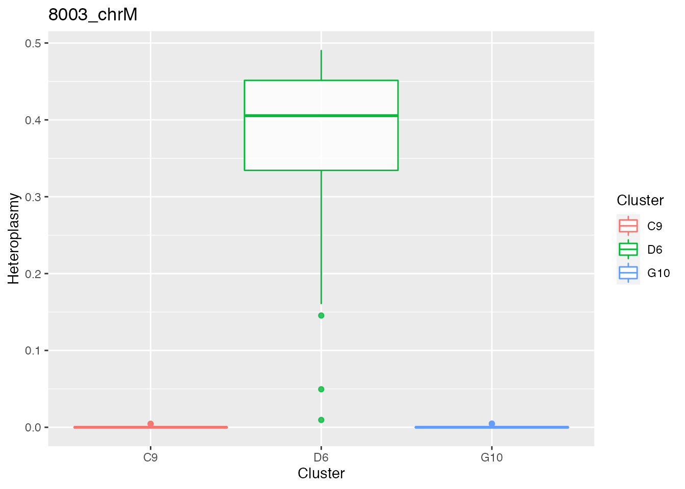
#>
#>
#> [[1]][[1]][[1]][[1]][[2]]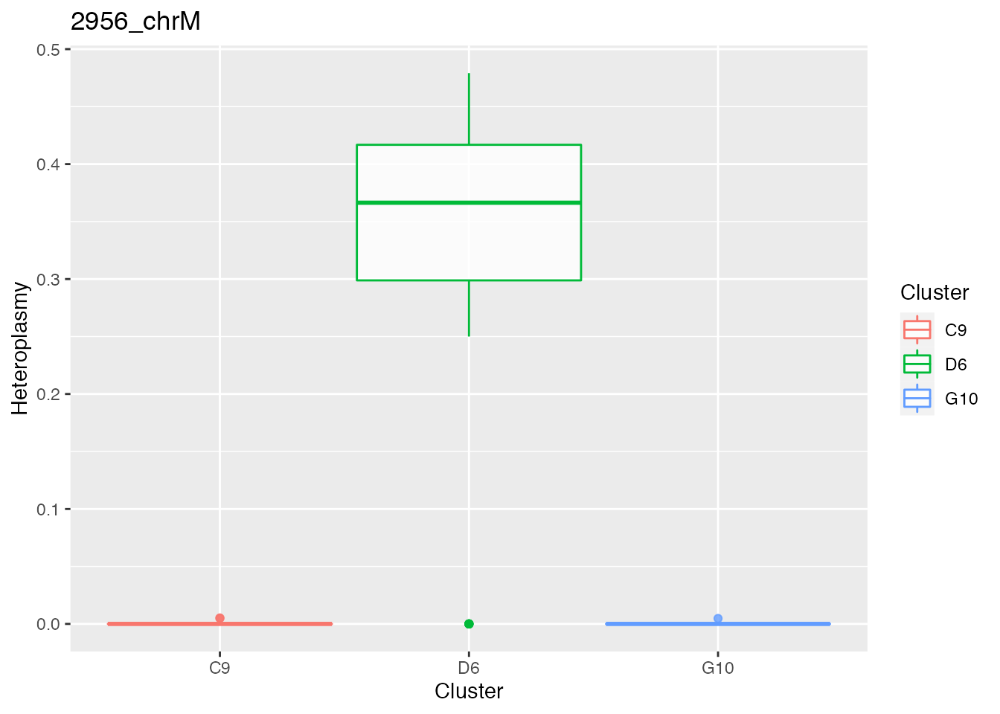
#>
#>
#> [[1]][[1]][[1]][[2]]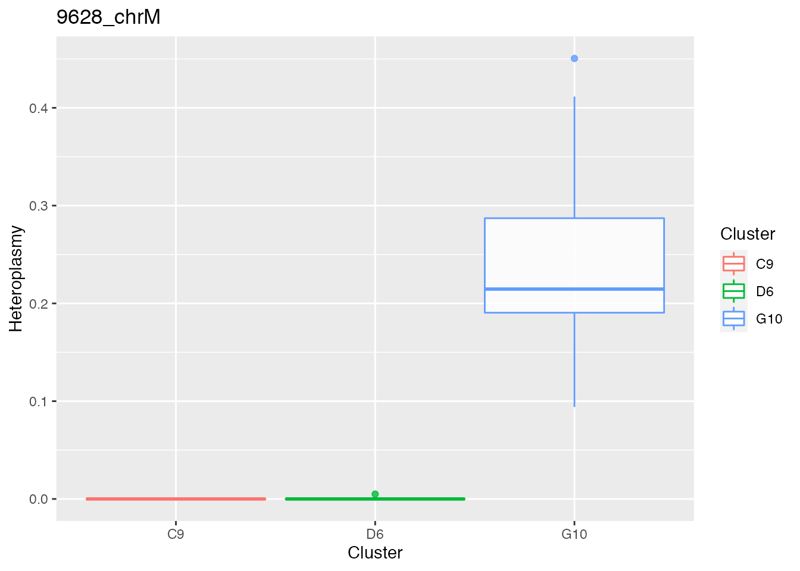
#>
#>
#> [[1]][[1]][[2]]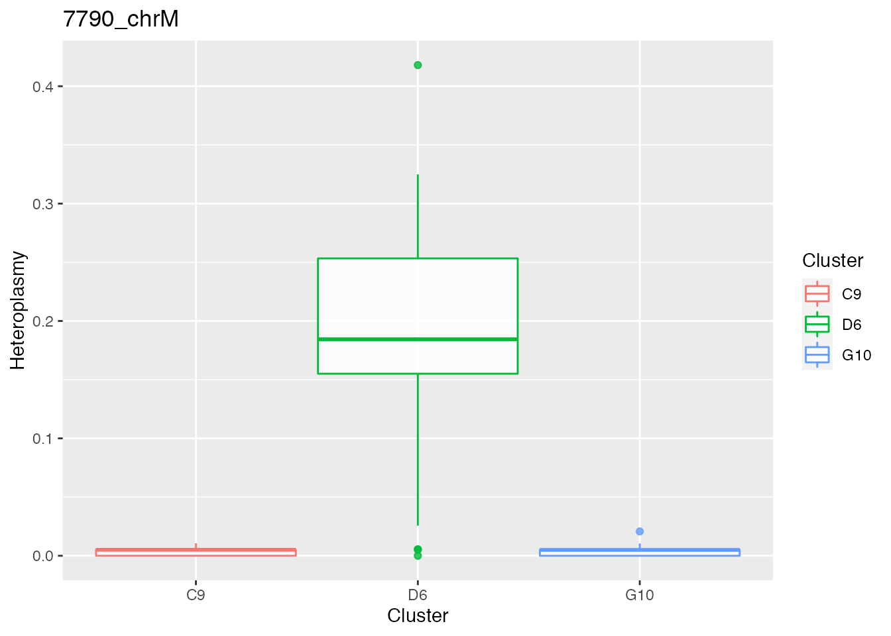
#>
#>
#> [[1]][[2]]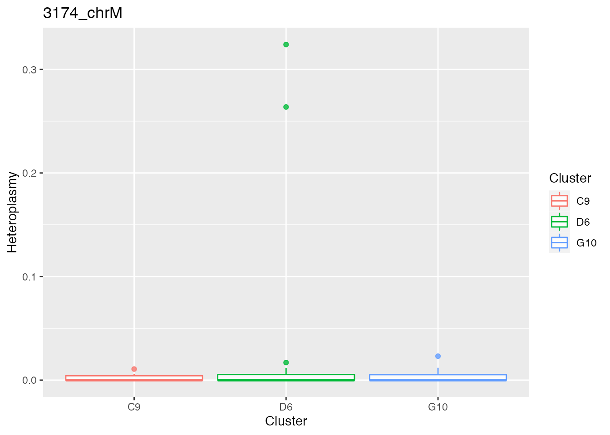
#>
#>
#> [[2]]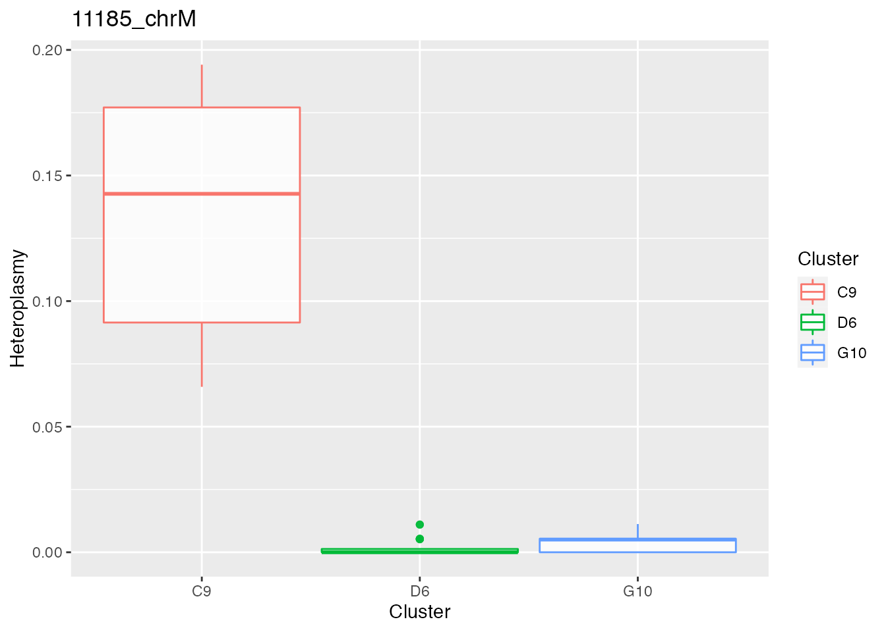
Dataset GSE115214
In the second part of the vignette it is shown the analysis performed on the dataset with GEO accession number GSE115214 from Ludwig et al, 2019 used in fig. 5. Primary human cells( CD34+ hematopoietic stem and progenitor cells HSPCs) from two independent donors were processed with single cell RNA-seq (Smart-seq2)
load(system.file("extdata", "name_cells_fig_5_all.Rda", package = "MitoHEAR"))
load(system.file("extdata", "name_cells_fig_5_all_analysis.Rda", package = "MitoHEAR"))
path_meta_data <- system.file("extdata", "CD34_colonies_table.txt", package = "MitoHEAR")
cell_convert <- read.table(path_meta_data, header = T)
cell_old <- cell_convert$ID1
cell_new <- cell_convert$ID2
cell_old_summary <- rep(0, length(name_cells_fig_5_all))
for (i in 1:length(cell_old_summary)){
cell_old_summary[i] <- c(paste(strsplit(name_cells_fig_5_all, "_")[[i]][3:6], collapse = "_"))
}
change <- cell_old_summary[grep("_colonies", cell_old_summary)]
cell_old_summary[grep("_colonies", cell_old_summary)] <- substr(change, 1, nchar(change)-9)We don’t execute the function get_raw_counts_allele here and we directly load his output. A command line implementation of the function get_raw_counts_allele is also available (see github README file for info).
path_meta_data <- load(system.file("extdata", "output_SNP_mt_fig_5_new.Rda", package = "MitoHEAR"))
output_SNP_mt_fig_5 <- result
matrix_allele_counts <- output_SNP_mt_fig_5[[1]]
name_position_allele <- output_SNP_mt_fig_5[[2]]
name_position <- output_SNP_mt_fig_5[[3]]
common_old <- intersect(cell_old, cell_old_summary)
row.names(matrix_allele_counts) <- cell_old_summary
matrix_allele_counts <- matrix_allele_counts[common_old, ]
meta_old <- data.frame(cell_old, cell_new)
row.names(meta_old) <- cell_old
meta_old <- meta_old[common_old, ]
new_small <- meta_old[, 2]
row.names(matrix_allele_counts) <- new_small
donor_all <- rep(0, length(row.names(matrix_allele_counts)))
donor_all[grep("Donor1_", row.names(matrix_allele_counts))] <- "Donor_1"
donor_all[grep("Donor2_", row.names(matrix_allele_counts))] <- "Donor_2"
donor_1_2 <- get_heteroplasmy(matrix_allele_counts, name_position_allele, name_position, number_reads = 50, number_positions = 2000, filtering = 2, donor_all)
sum_matrix <- donor_1_2[[1]]
sum_matrix_qc <- donor_1_2[[2]]
heteroplasmy_matrix_ci <- donor_1_2[[3]]
allele_matrix_ci <- donor_1_2[[4]]
cluster_ci <- donor_all[row.names(sum_matrix)%in%row.names(sum_matrix_qc)]
index_ci <- donor_1_2[[5]]
name_position_allele_qc <- name_position_allele[name_position%in%colnames(sum_matrix_qc)]
name_position_qc <- name_position[name_position%in%colnames(sum_matrix_qc)]
relevant_bases <- filter_bases(heteroplasmy_matrix_ci, min_heteroplasmy = 0.01, min_cells = 50, index_ci)Identification of most different bases according to heteroplasmy between donor1 and donor2
p_value_wilcox_test_1 <- get_wilcox_test(heteroplasmy_matrix_ci[, relevant_bases], cluster_ci, "Donor_1", "Donor_2" , index_ci)
p_value_wilcox_test_sort_1 <- sort(p_value_wilcox_test_1, decreasing = F)
p_value_wilcox_test_sort_small_1 <- p_value_wilcox_test_sort_1[p_value_wilcox_test_sort_1<0.05]
p_value_wilcox_test_sort_top <- p_value_wilcox_test_sort_small_1[1:5]
q <- list()
for ( i in 1:length(p_value_wilcox_test_sort_top[1:2])){
p <- plot_heteroplasmy(names(p_value_wilcox_test_sort_top)[i], heteroplasmy_matrix_ci, cluster_ci, index_ci)+ggplot2::ggtitle(paste(names(p_value_wilcox_test_sort_top)[i], round(p_value_wilcox_test_sort_small_1[i], 4), sep = "-"))
q <- list(q, p)
}
q
#> [[1]]
#> [[1]][[1]]
#> list()
#>
#> [[1]][[2]]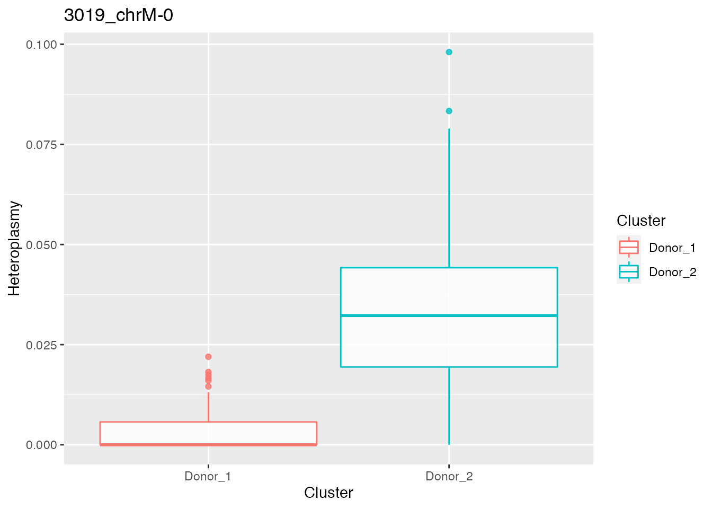
#>
#>
#> [[2]]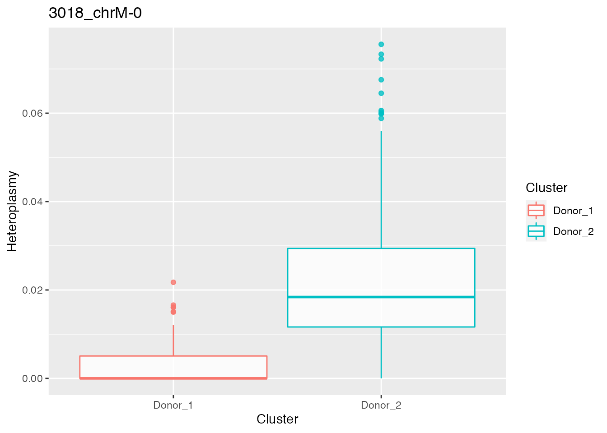
q <- list()
for ( i in names(p_value_wilcox_test_sort_top[1:2])){
p <- plot_allele_frequency(i, heteroplasmy_matrix_ci, allele_matrix_ci, cluster_ci, name_position_qc, name_position_allele_qc, 5, index_ci)
q <- list(q, p)
}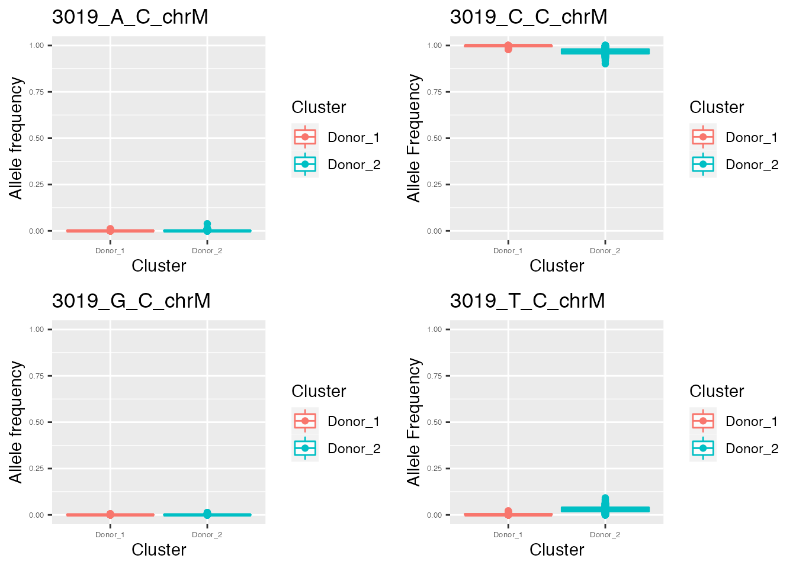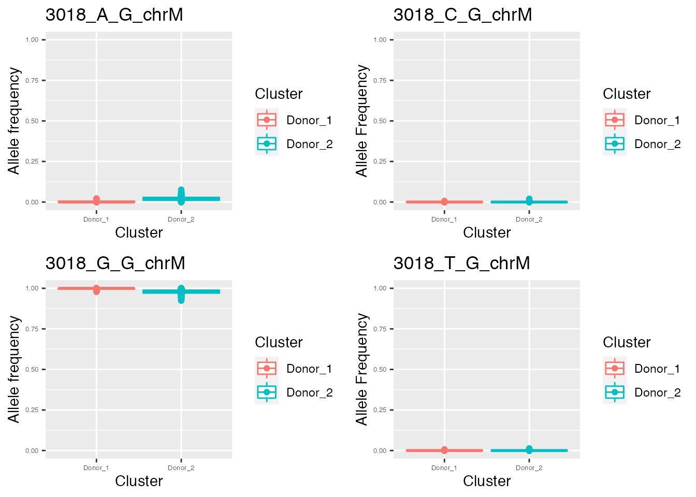
q
#> [[1]]
#> [[1]][[1]]
#> list()
#>
#> [[1]][[2]]
#> TableGrob (2 x 2) "arrange": 4 grobs
#> z cells name grob
#> 1 1 (1-1,1-1) arrange gtable[layout]
#> 2 2 (1-1,2-2) arrange gtable[layout]
#> 3 3 (2-2,1-1) arrange gtable[layout]
#> 4 4 (2-2,2-2) arrange gtable[layout]
#>
#>
#> [[2]]
#> TableGrob (2 x 2) "arrange": 4 grobs
#> z cells name grob
#> 1 1 (1-1,1-1) arrange gtable[layout]
#> 2 2 (1-1,2-2) arrange gtable[layout]
#> 3 3 (2-2,1-1) arrange gtable[layout]
#> 4 4 (2-2,2-2) arrange gtable[layout]
heteroplasmy_matrix_ci_small <- heteroplasmy_matrix_ci[, relevant_bases]
allele_matrix_ci_small <- allele_matrix_ci[, name_position_qc%in%relevant_bases]Unsupervised cluster analysis among cells based on allele frequency values
result_clustering_sc <- clustering_angular_distance(heteroplasmy_matrix_ci_small, allele_matrix_ci_small, cluster_ci, length(colnames(heteroplasmy_matrix_ci_small)), deepSplit_param = 0, minClusterSize_param = 100, 0.2, min_value = 0.001, index = index_ci, relevant_bases = NULL)
#> Warning in clustering_angular_distance(heteroplasmy_matrix_ci_small,
#> allele_matrix_ci_small, : Less than 872 bases present. All the bases will be
#> consider for downstream analysis.
#> ..cutHeight not given, setting it to 2.85 ===> 99% of the (truncated) height range in dendro.
#> ..done.
old_new_classification <- result_clustering_sc[[1]]
dist_matrix_sc <- result_clustering_sc[[2]]
top_dist <- result_clustering_sc[[3]]
common_idx <- result_clustering_sc[[4]]
old_classification <- as.vector(old_new_classification[, 1])
new_classification <- as.vector(old_new_classification[, 2])The unsupervised cluster analysis divides cells in two groups that perfectly coincide with donor 1 and donor 2
plot_heatmap(new_classification, old_classification, (dist_matrix_sc), cluster_columns = F, cluster_rows = F, "Euclidean distance")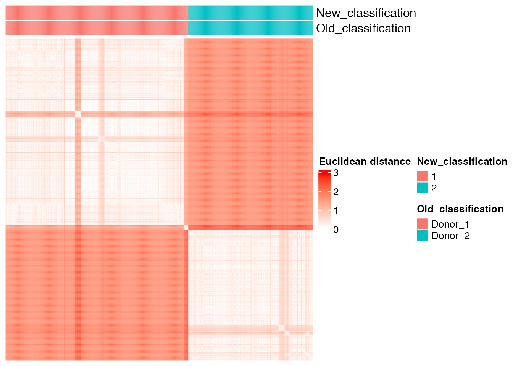
The final number of clusters obtained does not change with the number of top bases used (determined with the parameter min_value in the function choose_features_clustering. The number in the clustree plot (1, 2, 3, 4) refers to the index of the vector min_frac. So in this case 1 refers to 0.1, 2 to 0.01 and so on.
min_frac <- c(0.1, 0.01, 0.001, 0.0001)
choose_features_clustering(heteroplasmy_matrix_ci_small, allele_matrix_ci_small, cluster_ci, top_pos = length(colnames(heteroplasmy_matrix_ci_small)), deepSplit_param = 0, minClusterSize_param = 100, min_frac, 0.2, index = index_ci)Dataset GSE115214 only with donor 1
In the second part of the vignette it is shown the analysis performed on the dataset with GEO accession number GSE115214 Ludwig et al, 2019 used in fig. 5. Primary human cells( CD34+ hematopoietic stem and progenitor cells HSPCs) from two independent donors were processed with single cell RNA-seq (Smart-seq2). Below we focus only on some colonies from donor 1.
donor_1 <- donor_all[donor_all == "Donor_1"]
colony_1 <- rep(0, length(seq(101, 135)))
for (i in 1:length(seq(101, 135))){
colony_1[i] <- paste0("C", seq(101, 135)[i], collapse = "")
}
colony_1_all <- rep(0, length(row.names(matrix_allele_counts)))
for (i in colony_1 ){
colony_1_all[grep(i, row.names(matrix_allele_counts))] <- i
}
cluster_ci <- colony_1_all[grep("Donor1_", row.names(matrix_allele_counts))]
only_col <- c("C101", "C103", "C107", "C109", "C112", "C114", "C116", "C118", "C120", "C122", "C124", "C132", "C135")
matrix_allele_counts_1 <- matrix_allele_counts[grep("Donor1_", row.names(matrix_allele_counts)), ]
donor_1 <- get_heteroplasmy(matrix_allele_counts_1[cluster_ci%in%only_col, ], name_position_allele, name_position, number_reads = 50, number_positions = 2000, filtering = 2, donor_1[cluster_ci%in%only_col])
sum_matrix <- donor_1[[1]]
sum_matrix_qc <- donor_1[[2]]
heteroplasmy_matrix_ci <- donor_1[[3]]
allele_matrix_ci <- donor_1[[4]]
cluster_ci <- cluster_ci[cluster_ci%in%only_col]
cluster_ci <- cluster_ci[row.names(sum_matrix)%in%row.names(sum_matrix_qc)]
index_ci <- donor_1[[5]]
name_position_allele_qc <- name_position_allele[name_position%in%colnames(sum_matrix_qc)]
name_position_qc <- name_position[name_position%in%colnames(sum_matrix_qc)]
relevant_bases <- filter_bases(heteroplasmy_matrix_ci, min_heteroplasmy = 0.01, min_cells = 10, index_ci)
heteroplasmy_matrix_ci_small <- heteroplasmy_matrix_ci[, relevant_bases]
allele_matrix_ci_small <- allele_matrix_ci[, name_position_qc%in%relevant_bases]Unsupervised cluster analysis among cells based on allele frequency values
result_clustering_sc <- clustering_angular_distance(heteroplasmy_matrix_ci_small, allele_matrix_ci_small, cluster_ci, length(row.names(heteroplasmy_matrix_ci_small)), deepSplit_param = 0, minClusterSize_param = 10, 0.2, min_value = 0.001, index = index_ci, relevant_bases = NULL)
#> ..cutHeight not given, setting it to 2.75 ===> 99% of the (truncated) height range in dendro.
#> ..done.
old_new_classification <- result_clustering_sc[[1]]
dist_matrix_sc <- result_clustering_sc[[2]]
top_dist <- result_clustering_sc[[3]]
common_idx <- result_clustering_sc[[4]]
old_classification <- as.vector(old_new_classification[, 1])
new_classification <- as.vector(old_new_classification[, 2])Comparison between the ground truth and the new partition obtained with unsupervised cluster analysis
plot_heatmap(new_classification, old_classification, (dist_matrix_sc), cluster_columns = F, cluster_rows = F, "Euclidean distance")
Below the top 4 bases selected for the unsupervised cluster analysis.
q <- list()
for ( i in 1:length(top_dist[1:4])){
p <- plot_heteroplasmy(top_dist[i], heteroplasmy_matrix_ci, cluster_ci, index_ci)
q <- list(q, p)
}
q
#> [[1]]
#> [[1]][[1]]
#> [[1]][[1]][[1]]
#> [[1]][[1]][[1]][[1]]
#> list()
#>
#> [[1]][[1]][[1]][[2]]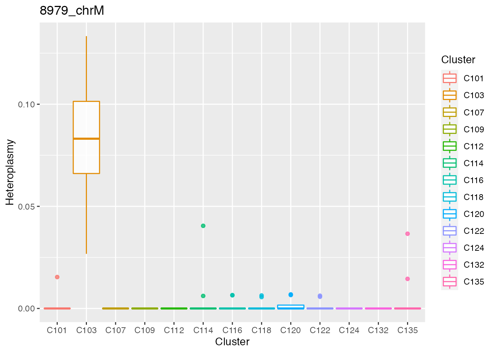
#>
#>
#> [[1]][[1]][[2]]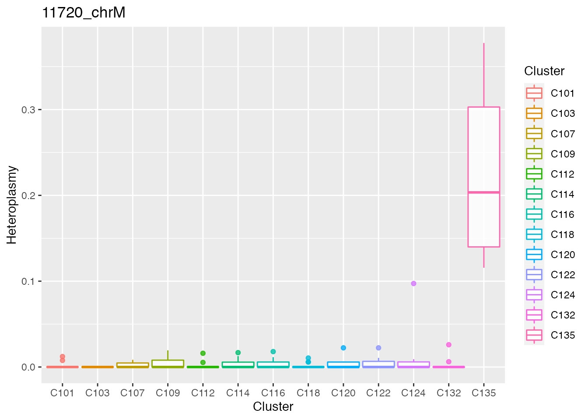
#>
#>
#> [[1]][[2]]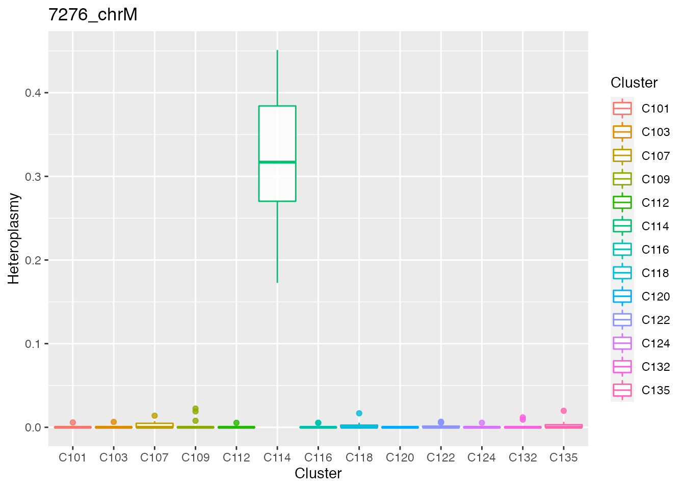
#>
#>
#> [[2]]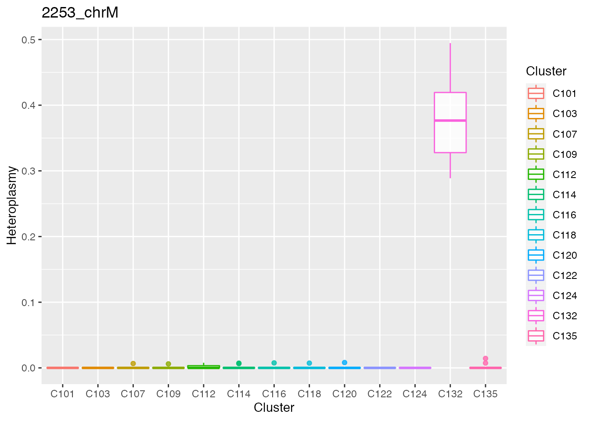
utils::sessionInfo()
#> R version 4.0.2 (2020-06-22)
#> Platform: x86_64-apple-darwin17.0 (64-bit)
#> Running under: macOS Mojave 10.14.6
#>
#> Matrix products: default
#> BLAS: /Library/Frameworks/R.framework/Versions/4.0/Resources/lib/libRblas.dylib
#> LAPACK: /Library/Frameworks/R.framework/Versions/4.0/Resources/lib/libRlapack.dylib
#>
#> locale:
#> [1] en_US.UTF-8/en_US.UTF-8/en_US.UTF-8/C/en_US.UTF-8/en_US.UTF-8
#>
#> attached base packages:
#> [1] stats graphics grDevices utils datasets methods base
#>
#> other attached packages:
#> [1] MitoHEAR_0.1.0
#>
#> loaded via a namespace (and not attached):
#> [1] Rcpp_1.0.7 circlize_0.4.13 png_0.1-7
#> [4] assertthat_0.2.1 rprojroot_2.0.2 digest_0.6.29
#> [7] utf8_1.2.2 R6_2.5.1 dynamicTreeCut_1.63-1
#> [10] stats4_4.0.2 evaluate_0.14 ggplot2_3.3.5
#> [13] highr_0.9 pillar_1.6.4 GlobalOptions_0.1.2
#> [16] rlang_0.4.12 jquerylib_0.1.4 magick_2.7.3
#> [19] S4Vectors_0.28.1 GetoptLong_1.0.5 rmarkdown_2.11
#> [22] pkgdown_2.0.2 textshaping_0.3.6 desc_1.2.0
#> [25] labeling_0.4.2 stringr_1.4.0 munsell_0.5.0
#> [28] compiler_4.0.2 xfun_0.29 pkgconfig_2.0.3
#> [31] systemfonts_1.0.4 BiocGenerics_0.36.1 shape_1.4.6
#> [34] htmltools_0.5.2 tidyselect_1.1.1 tibble_3.1.6
#> [37] gridExtra_2.3 IRanges_2.24.1 matrixStats_0.61.0
#> [40] fansi_0.5.0 crayon_1.4.2 dplyr_1.0.7
#> [43] grid_4.0.2 jsonlite_1.7.2 gtable_0.3.0
#> [46] lifecycle_1.0.1 DBI_1.1.2 magrittr_2.0.1
#> [49] scales_1.1.1 stringi_1.7.6 cachem_1.0.6
#> [52] farver_2.1.0 fs_1.5.2 bslib_0.3.1
#> [55] ellipsis_0.3.2 ragg_1.2.2 generics_0.1.1
#> [58] vctrs_0.3.8 rdist_0.0.5 RColorBrewer_1.1-2
#> [61] rjson_0.2.20 tools_4.0.2 Cairo_1.5-12.2
#> [64] glue_1.6.0 purrr_0.3.4 parallel_4.0.2
#> [67] fastmap_1.1.0 yaml_2.2.1 clue_0.3-60
#> [70] colorspace_2.0-2 cluster_2.1.0 ComplexHeatmap_2.6.2
#> [73] memoise_2.0.1 knitr_1.37 sass_0.4.0